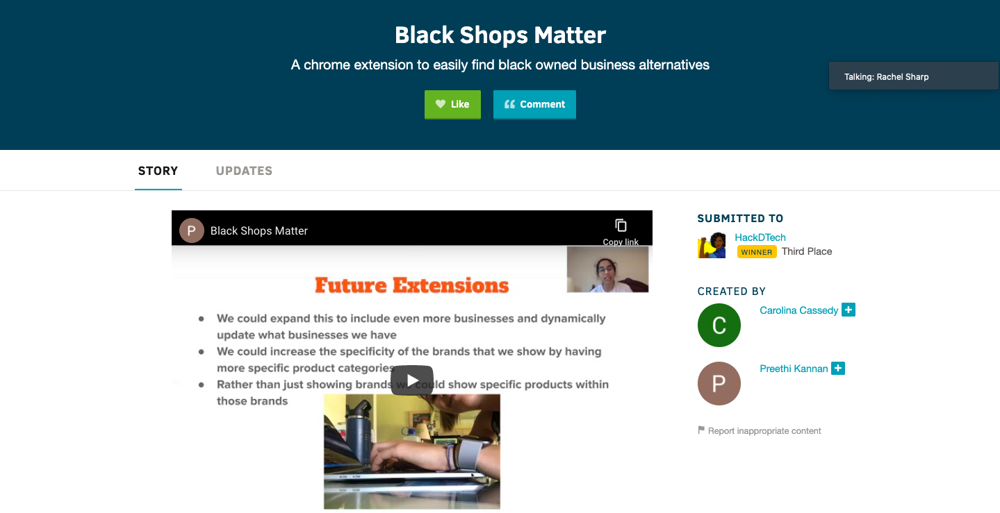

Black Shops Matter
- We built a Chrome extension to help shoppers be conscious of where they are buying from.
- When shopping on Amazon if buyers find a product that has an alternative from a black business a notification will pop up and buyers can check our extension for links to those products.
- Our extension has a list of business alternatives with links to their websites that fall in the same product category as the product the shopper is buying.
- For our project, we used HTML/CSS and Javascript.
- You can read more about the project, challlenges we ran into while building it and future changes here.
- Here is a demo.

6 Feet Apart
- This website provides a good resoursce for the number of covid confirmed cases/deaths in your area. The map in the site allows you to search for the city or county you're interested in learning more about.
- View the project here.
- View the teams Github here.